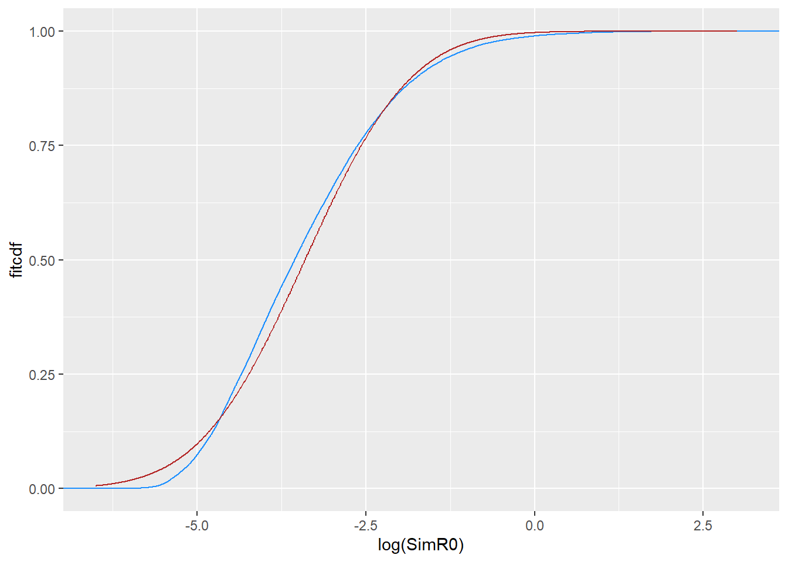
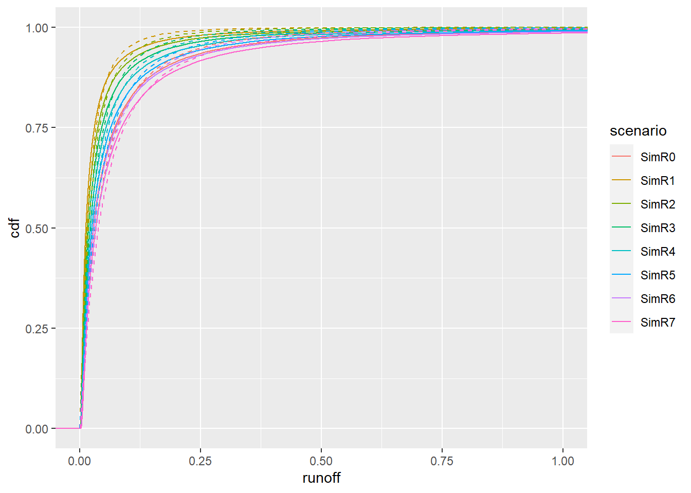
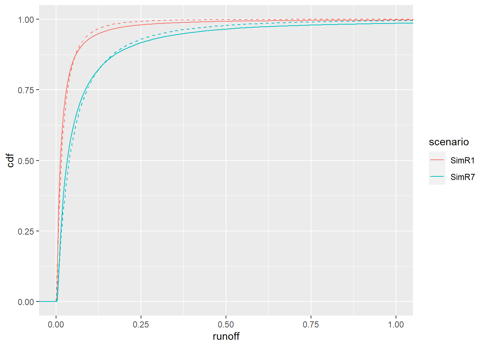
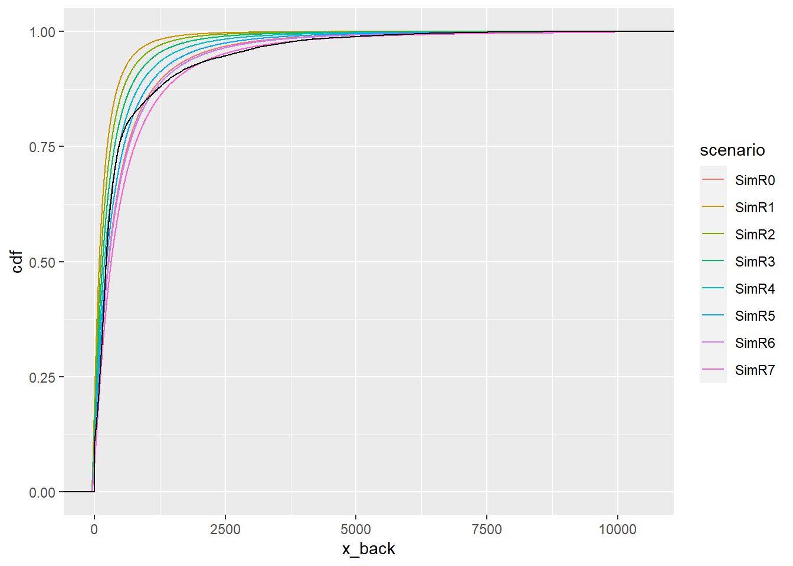
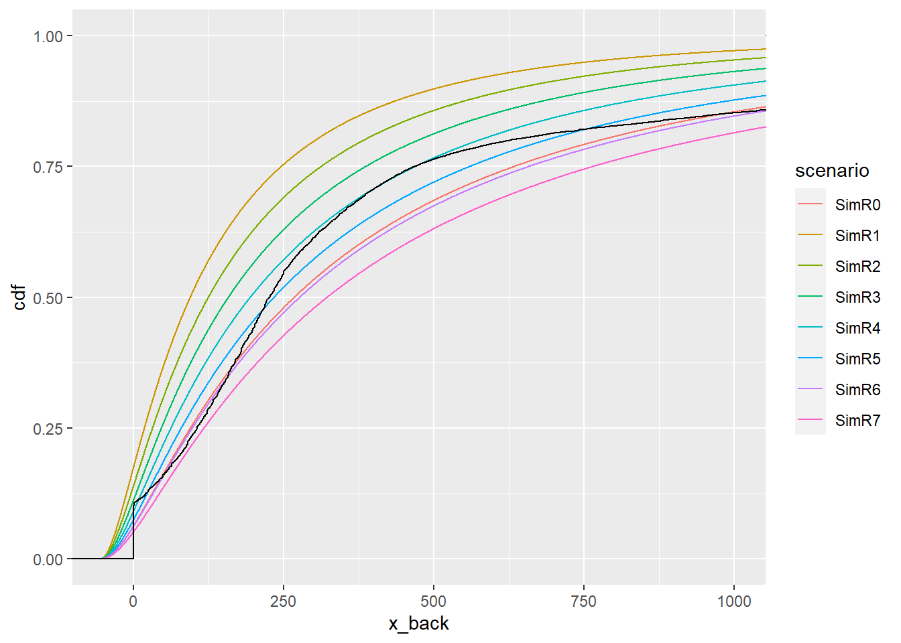

I’m using flow_scaling.qmd to pull the gauges and scale them, but actually getting the scaling relationships is independent, and so doesn’t need to happen in the same script. I’ll do that here.
library(werptoolkitr)library(dplyr)
Attaching package: 'dplyr'
The following objects are masked from 'package:stats':
filter, lag
The following objects are masked from 'package:base':
intersect, setdiff, setequal, union
library(readr)library(tidyr)library(lubridate)
Loading required package: timechange
Attaching package: 'lubridate'
The following objects are masked from 'package:base':
date, intersect, setdiff, union
Bring in David’s climate scenarios NOTE: Only go to 31-Jan-2019.
Prec and ETp (PE) are historical (not needed here)
SimR0 is simulated historical runnoff using actual historical Prec and ETp (PE)
SimR1 - SimR7 are simulated with +7% PE but different Rainfall:
-20%
-15% (“High change scenario”)
-10%
-5% (“Moderate change scenario”)
+0%
+5% (“Low change scenario”)
+10%
Make numeric metadata
The format of this may change, but we’re going to want something. Lists are going to be easier to yaml than dataframes (though a dataframe is easier to construct).
Though it sounds like the scenario yamls are likely to not be lists, but single values, ie each one gets their own value to create it, and that’s it (which makes sense).
rain_multiplier <-seq(from =0.8, to =1.1, by =0.05) %>%setNames(paste0('R', 1:7))scenario_meta <-list(PE_multiplier =1.07,rain_multiplier = rain_multiplier,scenario_name =names(rain_multiplier))# Don't run yet, since I don't know the format we'll be using, but this works to create yaml metadata# yaml::write_yaml(scenario_meta, file = 'path/to/file.yml')
Suggestion is to compare each scenario to simulated historic baseline, work out the ratio and apply the difference to the gauge records… Would be good to get ‘cease to flow’ events for the scenarios.
Bring in the data
Get the list of files and read them in (to a list of dfs)
Have given this some thought and think I’ve come up with a practical solution.
I think the easiest way will be to
Compute ranks/percentiles for both the observed and modelled future time series
Construct a new time series based on the observed ranks and replaces the observed values with the corresponding value for the same rank in the future time series.
This will give us a new future time series but if the distributions of the historical modelled and observed time series are different then the time series will not be a realistic representation of the future observations. So then my suggestion is to bias-correct the new future time series to make it look like a future observations time series.
To do the bias correction my thought is to set up a regression model between the observations and historical time series where we fudge it to deal with the zero-value problem.
Assuming that the flow time series are roughly log-normally distributed, we can set up a regression between the values of corresponding ranks Log(obsr + delta) = a + b*log(modelr + delta)
Where:
obsr is the observation for rank r
modelr is the modelled value of rank r
delta is a small non-zero value 0.1 or 0.01, probably the latter
a and b are the regression coefficients.
When fitting the regression to the observations and historical (no change) streamflow we set all the values where obs = 0 to missing. I don’t think that the model output will have zero values given they are area-weighted averages of gridded data
When applying the regression to correct bias in the new future time series, then we are likely to generate negative values that can just be reset to zero.
I think that the above will also allow for the probability of zero values to increase or decrease, as the modelled time series shouldn’t have zero values in it…
Testing
I’m going to figure out how to do this with a single hydrograph and scenario to make sure it works and then roll it out how I already rolled out the q-q version
test_model <- scenario_list$SS20orig_hydro <-readRDS(file.path(hydro_dir, 'extracted_flows.rds'))test_hydro <- orig_hydro[[20]]# save that so we don't have to pass this around as we clean things upsave(test_hydro, test_model, file =file.path('scenario_creation', 'test_scaling.rdata'))
I’m going to continue with monthly binning, but we could just drop the binning if it gets too complicated or we don’t have the data to support it But we know the hydrographs will behave differently throughout the year, so might as well let them. Months will introduce artificial discontinuities, but we aren’t trying to be perfect.Month-matching makes more sense to create statistics that are at least partially reflective of the major changes through the water year- e.g. it is useful to know the 90th percentile for the low points of the year too, and we’d never see that if we just pooled the data.
I think I’ll ignore monthly binning while sorting out the method though
Before we even get to the replacing and unbiasing, what do those probability distributions look like? Are they remotely similar? Logging the data- loses the 0s but this is just a quick look
Quite a bit different. And slightly trimodal, though not nearly as pronounced as orig_hydros[[25]].
Rank-replacement
This replaces the values of rank x in the past hydro with values of rank x in modelled. It therefore gets the sequence of the real hydrograph, but the distribution of the modelled runoff.
We need to deal with duplicate ranks. The most common will be zeros in the hydrograph, but they could occur in the modelled data too.
sum(duplicated(test_hydro$hydrank))
[1] 14473
sum(duplicated(test_model$histrank))
[1] 178
The modelled data is not duplicated on 0, necessarily
test_model %>%group_by(histrank) %>%summarise(nr =n(), val =first(SimR0)) %>%filter(nr >1)
Is this fundamentally the same issue as the data length issue below? We have x ranks in the hydrograph, and x + z ranks in the model. So all the data with rank d (duplicated) should get the same value, which is the same issue as if there were only one value of d and just fewer datapoints in the hydrograph than the data. One argument against the median for the ranks as I suggest is that when 0 is duplicated, we would end up pushing the median of several ranks to it instead of the minimum.
And we need to deal with two situations of data length- hydrographs longer than model, and model longer than hydrograph (more typical). In the first, we need to duplicately assign model rank-values. In the second, we need to assign multiple ranks to a single rank. Maybe the median. Or we can use quantiles instead of ranks to break it up into the same size chunks.
Simple code for rank-replacing. will need to modify
And the duplication issues. I’m going to move away from tibbles, we can do this with $ and [] more generally to end up with a function. We might still apply that with a mutate to do the grouping though.
h <-c(5,1,1,0,3,0,0,4,8,5,0,0,0,0, NA)m <-c(6,10,9,9,4,7,2,5,NA,2,3,6,9,5,2,3,10,9,4)rankh <-rank(h, na.last ='keep')rankm <-rank(m, na.last ='keep')
There’s not actually a clean way to get rankings that aren’t affected by duplication- ties.method first, last, min and max all end up giving each value a different rank and skipping numbers depending on how many dups there are at a given level, and average gives all duplicated values the same rank (good), but skips ranks based on how many duplicates there are. Which isn’t good- we will have different numbers of duplicates in the two datasets.
So, we need to cut to unique values, rank them, and use those rankings. Use na.last = 'keep' to not give NAs unique rankings. Though it would also work to drop NA when we get the unique values.
hu <-unique(h)mu <-unique(m)rhu <-rank(hu, na.last ='keep')rmu <-rank(mu, na.last ='keep')
Now, I was thinking I would map those ranks back to the original data, so we have, for example, 7 rank 1s in h (the zeros). But then we run up against the issue of different lengths. Rank 8 in hu is the highest value, while mu goes to 10.
So, do we actually want to go back to findInterval, with the number of intervals being min(length(h), length(m))? I think so (though those should probably be hu and mu. That quickly suggests we could just get back to q-q scaling too, and skip the straight replacements. Maybe- if the debiasing requires replaced values, that won’t work. Get there and see.
A general quantile function I developed earlier. The trick will be to make q_perc right to give as many values as possible (rankings) instead of quantiles. e.g each value should be in its own quantile for the smallest data. Again, is this necessary? Or can we q-q scale (instead of value-replace) and then debias the zeros?
get_q <-function(vals, q_perc) { qs <-quantile(vals, probs =seq(0,1, q_perc), type =5, na.rm =TRUE)# cut fails with lots of zeros (well, any duplicate bins)# binvec <- cut(vals, qs, include.lowest = TRUE, labels = FALSE)# findInterval is OK with duplicate bins, but combines them, eg. if there are 10 bins that are all 0, it will call them all q10. binvec <-findInterval(vals, qs, rightmost.closed =TRUE)return(binvec)}
That doesn’t actually work though- the quantiles goof it up because the duplicates necessarily shift the distribution. Instead, to get as close to a ranking as we can, we need to use the unique values for quantiles, but then findInterval on the full vectors. I think.
There are still some funny issues there (some quantiles can go missing), though that is primarily because of small test data.
Now, let’s do the replacement. Use the median (or mean?) of the modelled data? In this dummy case, q4 has both 5 and 6 in it, so we should end up with somethign happening here.
Aggregate produces a df, so at this point I probably should switch to dplyr since it’s easier.
We need the summary of the ranks for the modelled data, but not for the hydrology- we need a single value to replace for each rank, but we can put it in many rows for the replacement.
# mm <- aggregate(m, by = list(mi), FUN = median)# mdf <-tibble(mod_vals = m, ranks = mi) %>%group_by(ranks) %>%summarise(mod_vals =median(mod_vals))hdf <-tibble(hyd_vals = h, ranks = hi)# we could use `match` and indexing, but we're already in dplyr sohdf <-left_join(hdf, mdf, by ='ranks')ggplot(hdf, aes(x = hyd_vals, y = mod_vals)) +geom_point()
Make all that a function so we can apply it to the actual data. The binning is very similar to before, it just uses unique values instead of all values to approximate a ranking.
Re-build data cleanly
we had ranks in above, we want to do that differently now, so start from scratch
Data arrangement functions- actually, sort this out later, I think we can probably roll in the regression and apply across the sims, and so we want to sort it out here
# Get the number of 'ranks' (bins)fewest <-min(length(unique(test_hydro$hyd_vals)), length(unique(test_model$SimR0)))# Rank the hydrographtest_hydro <- test_hydro %>%mutate(ranks =get_q(hyd_vals, 1/fewest))# Rank the model outputsmodel_rankvals <- test_model %>%mutate(ranks =get_q(SimR0, 1/fewest)) %>%group_by(ranks) %>%# tempting to apply this `across(stars_with('Sim'))`, but the ranks will differ and so we need to be careful. Might be as easy as `across` in the ranks too?summarise(mod_vals =median(SimR0))# replace (really, add another column)test_hydro <-left_join(test_hydro, model_rankvals, by ='ranks')
Check plots
Do the rankings seem to work?
ggplot(test_hydro, aes(x = hyd_vals, y = mod_vals)) +geom_line()
The variance is quite obviously different here, and that’s potentially an issue.
We already know the distributions look different from above. How do they look relative to rankings?Those are very different distributions, even when rescaled. Which is not surprising.
# yes, I should pivot longer but i want to go quick.ggplot(test_hydro, aes(x = ranks)) +geom_line(aes(y = hyd_vals), color ='forestgreen') +geom_line(aes(y = mod_vals*500), color ='dodgerblue')
There’s quite clearly no way that we will get reasonable estimates of hyd_vals from predictions from mod_vals- we’d get the line, and that’s obviously wrong. Doesn’t matter if we bump zeros or drop them, both are terrible fits.
As a check, let’s go ahead and make those distributions, and see just how terrible they are.
We could conceivably do a two-piece regression with only the mod_vals logged (e.g. in this plot, we could clearly throw together a piecewise regression with a knot at about -3)
ggplot(test_hydro, aes(x =log(mod_vals), y = hyd_vals)) +geom_point() +geom_smooth(method ='lm')
But that isn’t going to be general across gauges. It seems like a better plan will be to actually operate on the distributions themselves. Which potentially brings us back to the original approach.
Distribution shifting
I think there are two ways to go here-
as we’ve done, replace flow with rank-matched model data. Then shift that distribution to re-match flow.
For other scenarios, use that same distributional shift to get from model to flow
Get the distributional shifts for the different model data, and apply these to the flow distribution
This is the q-q scaling, if we were to stop here
Use parametric dists for the flow, so those shifts can bring the data up and down across 0.
Will either of those ever bring zeros up? I’m still not seeing how that happens.
The model distributions
Above we compared the ecdfs for the SimR0 and the flow, but let’s look at how consistent the distributions are for the other Sims. We don’t care about time, so just let it fall off in the pivot. The green line is the hydrograph values.
We can’t just log(x) for the lognorm pdf because of the nonlinear transform. But we can look at it by directly building a normal pdf on the lognorm scale.
Interesting. Thats a worse fit to the lognormal than the hydrographs were.
ggplot(test_model) +stat_ecdf(mapping =aes(x =log(SimR0)), color ='dodgerblue') +geom_line(data = logfitsim, mapping =aes(x =log(xval), y = fitcdf), color ='firebrick')

Fitting censored data
Let’s assume the hydrograph data is left-censored (essentially a detection limit, below which data is zero). That should yield better distributional fits than above where we just threw the zeros out and fit what was left. We can get the estimates with fitdistrplus::fitdistcens. I’ll do this with test_hydro directly (and compare with other fits to check it makes sense).
First, we need a new dataframe to define the censoring. We use hyd_vals because that has dropped the values that are just bad. What do we want to say the ‘detection limit’ is? I guess the smallest nonzero value
censframe <- test_hydro |> dplyr::filter(!is.na(hyd_vals)) |># Throw out the NAs, we want a distribution dplyr::mutate(left =ifelse(hyd_vals ==0, NA, hyd_vals),right =ifelse(hyd_vals ==0, detectionlimit, hyd_vals)) |> dplyr::select(left, right) |>data.frame() # annoyingly tibbles break fitdistcens
Fit and get the parameters. Get the naive version too, to see how different it is. This is the same as above, but I’m trying to keep this self-contained.
Wait, this is always going to be crap if fit with plnorm (or weibull). Because those distributions are actually limited at 0, but the data is levelling off and wants to go below zero. So, we do need to go normal manually first. Or shift up, or something.
Shifting up
Does it work to just shift up?
First, we need a new dataframe to define the censoring. We use hyd_vals because that has dropped the values that are just bad. What do we want to say the ‘detection limit’ is? I guess the smallest nonzero value
censframe <- test_hydro |> dplyr::filter(!is.na(hyd_vals)) |># Throw out the NAs, we want a distribution dplyr::mutate(left =ifelse(hyd_vals_shift == detectionlimit, NA, hyd_vals_shift),right =ifelse(hyd_vals_shift == detectionlimit, detectionlimit, hyd_vals_shift)) |> dplyr::select(left, right) |>data.frame() # annoyingly tibbles break fitdistcens
Fit and get the parameters. Get the naive version too, to see how different it is. This is the same as above, but I’m trying to keep this self-contained.
Those are actually a lot better. Does this actually work? Or should we do it on the logged scale and normal dists? How much to shift?
Optimized upshifts
I’ve done a bunch of testing elsewhere with known distributions, and come up with a set of functions to determine the shift (and spit out a dataframe for diagnostic plots).
fitshift <-function(cleandata, shift_up) {# Handle the zero case- we just use the next value upif (shift_up ==0) {rightlim <-min(cleandata[cleandata>0]) } else { rightlim <- shift_up} inshift <- cleandata + shift_up upcens <-tibble(left =ifelse(inshift <= shift_up, NA, inshift),right =ifelse(inshift <= shift_up, rightlim, inshift))suppressWarnings(fit_up <-fitdistcens(censdata =data.frame(upcens),distr ='lnorm'))return(fit_up)}opt_up <-function(shift_up, cleandata) { fit_up <-fitshift(cleandata, shift_up)return(-fit_up$loglik)}optshift <-function(rawdata) {# This is about distributions, NOT data order, so get rid of NAs rawna <-na.omit(rawdata)# get the optimal shift shift <-optimize(opt_up, interval =c(0, 1000), cleandata = rawna)# Get the fit at that shift (would be nice to kick this out of opt_up somehow) fit_up <-fitshift(rawna, shift$minimum)# Create a df for output# The shifted data shiftdf <-tibble(orig_data = rawdata, shift_data = rawdata + shift$minimum, optimum_shift = shift$minimum)# This isn't ideal, but we can shove the cdf on here too, it just has rows that don't mean the same thing. prevents us saving a list though. shiftdf <- shiftdf |>mutate(x =row_number()/10,meanlog = fit_up$estimate['meanlog'],sdlog = fit_up$estimate['sdlog'],cdf_up =plnorm(x, fit_up$estimate['meanlog'], fit_up$estimate['sdlog']),pdf_up =dlnorm(x, fit_up$estimate['meanlog'], fit_up$estimate['sdlog']),# Some diagnosticsfitloglik = fit_up$loglik)# and a shifted-back version of the cdf/pdf just needs a shifted x. The# backshift of the data is just the original `rawdata`. shiftdf <- shiftdf |>mutate(x_back = x-shift$minimum)}
Now, let’s try running that for the data
optimal_fit <-optshift(test_hydro$hyd_vals)
Plot that- how are we doing? It’s OK, likely is the best fit, the distribution just isn’t lognormal.
How does that look compared to the non-shifted fit? I’ll shift this fit back to where it should be. They’re better in different places. But the shifted version is the only one that can possibly handle the truncation. And we know from the optimisation that it has a better log-likelihood, since 0 was an option.
ggplot(optimal_fit) +stat_ecdf(aes(x = orig_data), color ='firebrick') +geom_line(aes(x = x_back, y = cdf_up), color ='firebrick', linetype =2) +geom_line(data = logfit, mapping =aes(x = xval, y = fitcdf), color ='dodgerblue') +coord_cartesian(xlim =c(-70,3000))
Does a weibull fit better, now that we have the shift? No
# fitshift_w <- function(rawdata, shift_up) {# # Handle the zero case- we just use the next value up# if (shift_up == 0) {rightlim <- min(rawdata[rawdata>0])# } else {# rightlim <- shift_up}# # inshift <- rawdata + shift_up# # upcens <- tibble(left = ifelse(inshift <= shift_up, NA, inshift),# right = ifelse(inshift <= shift_up, rightlim, inshift))# # suppressWarnings(fit_up <- fitdistcens(censdata = data.frame(upcens),# distr = 'weibull'))# # return(fit_up)# }# # opt_up_w <- function(shift_up, rawdata) {# # fit_up <- fitshift_w(rawdata, shift_up)# # return(-fit_up$loglik)# }# # # optshift_w <- function(rawdata) {# # # This is about distributions, NOT data order, so get rid of NAs# rawdata <- na.omit(rawdata)# # # get the optimal shift# shift <- optimize(opt_up_w, interval = c(0, 1000), rawdata = rawdata)# # # Get the fit at that shift (would be nice to kick this out of opt_up somehow)# # fit_up <- fitshift_w(rawdata, shift$minimum)# # # Create a df for output# # The shifted data# shiftdf <- tibble(orig_data = rawdata, # shift_data = rawdata + shift$minimum, # optimum_shift = shift$minimum)# # # # This isn't ideal, but we can shove the cdf on here too, it just has rows that don't mean the same thing. prevents us saving a list though.# shiftdf <- shiftdf |> # mutate(x = row_number()/10,# cdf_up = pweibull(x, # fit_up$estimate['shape'],# fit_up$estimate['scale']),# pdf_up = dweibull(x, # fit_up$estimate['shape'],# fit_up$estimate['scale']),# # Some diagnostics# fitloglik = fit_up$loglik)# # # and a shifted-back version of the cdf/pdf just needs a shifted x. The# # backshift of the data is just the original `rawdata`.# shiftdf <- shiftdf |> # mutate(x_back = x-shift$minimum)# # }
if we have data with one distribution, how do we give it another known distribution. I seem to remember somethign about f(g(x)) and g(x)^-1, but conceptually, what are we doing?
Even if we can do that, is there a way to shift them to yield numbers below zero? or above, for that matter? Or are we just re-developing a more complex q-q?
We have some x-value (say, flow). We want to shift it to a new distribution. I think conceptually, we go up to its value in the plots above, then over to the corresponding p(x) on the other distribution, then down to get a new value.
So, for the hydrographs, start with cleanhydro, the values of the hydrographs
# # Get the probs for each hydrograph value- this is the ecdf, which creates a *function* that takes x as arguments and returns probabilities# phydro <- ecdf(log(cleanhydro))# phydrop <- phydro(log(cleanhydro))# # # Get the hydrograph value for the matching probs for the fit lognormal# lnh <- qlnorm(phydrop, fit_hydro$estimate[1], fit_hydro$estimate[2])# # shifthyd <- tibble(hyd_vals = cleanhydro, fit_val = lnh)# Get the probs for each hydrograph value- this is the ecdf, which creates a *function* that takes x as arguments and returns probabilities# This is messy to use the dataframe from above, but I'm tired of re-writing things.# cleanraw <- test_hydro$hyd_vals %>% na.omit()phydro <-ecdf(optimal_fit$shift_data)optimal_fit <- optimal_fit %>%mutate(p_shift =phydro(shift_data),q_shiftln =qlnorm(p_shift, meanlog, sdlog),q_back = q_shiftln-optimum_shift)# lnh <- qlnorm(phydrop, fit_up$estimate['meanlog'], fit_hydro$estimate['sdlog'])# # Deal with the shift# lnh <- lnh - shift_by$minimum# # shifthyd <- tibble(hyd_vals = cleanraw, fit_val = lnh)# # xfit <- seq(0, 1000, by = 0.1)# shiftfit <- plnorm(xfit, # fit_up$estimate['meanlog'],# fit_up$estimate['sdlog'])# # shiftdf <- tibble(x = xfit, cdf = shiftfit, x_back = xfit - shift_by$minimum)
That looks like a pretty good translation.
ggplot(optimal_fit) +# ecdf of the hydrograph datastat_ecdf(mapping =aes(x = orig_data), color ='forestgreen') +# lognormal cdfgeom_line(aes(x = x_back, y = cdf_up), color ='firebrick', linetype =2) +# ecdf of the transformed data, should match the lognormal cdfstat_ecdf(aes(x = q_back),color ='dodgerblue', linetype =2) +coord_cartesian(xlim =c(-10, 1000))
So that’s almost dead on. What does it look like as a timeseries next to the real data? This is dangerous to just glue time on, but the order should be preserved.
optimal_fit$time <- test_hydro$time
newhydro <-ggplot(optimal_fit, aes(x = time)) +geom_line(mapping =aes(y = orig_data), color ='forestgreen') +geom_line(mapping =aes(y = q_back), color ='dodgerblue', linetype =2)newhydro
So, that works OK for low values, but blows up high. Basically because the hydrograph distribution is NOT a lognormal. Is this better or worse than the linear regression method? Not sure. The empirical distribution doesn’t fit a lognormal, and the relationship between runoff models and hydrograph is nonlinear. So in both cases, a direct hydrograph –> transform –> backtransform (even with no shifts in the distribution to reflect the scenarios) yields changes to the distribution. Which is worse/better? Not sure, they cause different sorts of errors. Might come down to which one is able to do the scenario shifts the best.
We could also do something like q-q away from 0, and one of these near it- e.g. fit the linear regression for the lower 10% of the data or only do the probs–>lognormal dist shift for that part of the data.
And we’re still left with the issue of what to do with this if it works- can we ever shift this in a way to give more or less zeros?
Scaling dists
How do we shift these distributions?
Let’s start by fitting the scenarios. I fit the baseline as manually-logged normal above, but I think here I’m trying to stick to just using the lnorm functions for simplicity.
# make a table from the fitfittabler <-function(x) { fitout <-fitdist(x, distr ='lnorm') fittable <-tibble(meanlog = fitout$estimate['meanlog'],sdlog = fitout$estimate['sdlog'],loglik = fitout$loglik)return(fittable)}scene_fits <- test_model %>%pivot_longer(starts_with('Sim')) %>%group_by(name) %>%summarize(fit_sims =fittabler(value)) %>%ungroup() %>%unnest(fit_sims)
ggplot() +stat_ecdf(data = model_long, mapping =aes(x = runoff, color = scenario)) +geom_line(data = scenecdf, mapping =aes(x = x, y = cdf, color = scenario),linetype =2) +coord_cartesian(xlim =c(0, 1))

That’s really hard to see, what if we just limit it to the lowest and highest?
ggplot() +stat_ecdf(data =filter(model_long, scenario %in%c('SimR1', 'SimR7')),mapping =aes(x = runoff, color = scenario)) +geom_line(data =filter(scenecdf, scenario %in%c('SimR1', 'SimR7')),mapping =aes(x = x, y = cdf, color = scenario),linetype =2) +coord_cartesian(xlim =c(0, 1))

Certainly not perfect, but nothing will be.
Now, how do we shift the distributions? The means and sds here are on the log scale, and so can be treated like normal parameters. AND, because they’re on the log scale, arithmetic changes in mean yield multiplicative changes in the data.
So, to shift NORMAL distributions, we just add means and so we need the difference from each scenario mean to the SimR0. And to shift the sds, we use a multiplicative shift.
A simple function I’ve used previously to shift data is
But here, we don’t really want to do that directly to the data, we want to figure out what the shifts need to be based on the shifts between SimR0 and the others and yielding equivalent shifts from arbitrary other distributions. But seeing how the shifts need to work can help with that.
Basically, the mean shift needs to be calculated as the mean_new - mean_reference and the sd shift needs to be sd_new/sd_reference, where *new are the SimR1...7, and *reference are the SimR0. And then to apply them to the hydrograph distribution, the new sd is old_sd*sd_shift and new mean is old_mean + mean_shift.
So, let’s get those shift values for each scenario.
I need to fix werptoolkitr to allow extra columns, but need to get this done more so, do the mean and log separately and glue together.
Joining, by = c("name", "meanlog")
Joining, by = c("name", "sdlog")
I don’t really want to be operating out of a dataframe just to get single numbers, but I think I will for the moment to keep things consistent and clean up later.
Shift the hydrograph parameters to match the shifts in the runoff parameters
ggplot() +geom_line(data = hydro_shift_cdf, mapping =aes(x = x_back, y = cdf, color = scenario)) +stat_ecdf(data = test_hydro, mapping =aes(x = value), color ='black')

Ugh, that really isn’t very good. It crosses almost all of the lines- e.g. the difference between the scenarios is less than the difference between the data and a lognormal distribution.
ggplot() +geom_line(data = hydro_shift_cdf, mapping =aes(x = x_back, y = cdf, color = scenario)) +stat_ecdf(data = test_hydro, mapping =aes(x = value), color ='black') +coord_cartesian(xlim =c(-50, 1000))

Log scale
ggplot() +geom_line(data = hydro_shift_cdf, mapping =aes(x = x_back, y = cdf, color = scenario)) +stat_ecdf(data = test_hydro, mapping =aes(x = value), color ='black') +scale_x_continuous(trans ='log')
Warning in self$trans$transform(x): NaNs produced
Warning: Transformation introduced infinite values in continuous x-axis
Transformation introduced infinite values in continuous x-axis
The shifts are going to make things wonky, because they were done on the base scale, and so don’t directly translate to a shift in x on the log scale. But hopefully we can see whether the shapes are way off. If we want to fit things on the log scale as normals, we should just do it directly (and not sure what we’d do about the shifts, then)- would need a different censoring assessment- maybe we could just fit them as truncated in that case, since the distribution won’t be bounded. The cdfs shouldn’t really tell us much new here- they’re just a rescaling.
ggplot() +geom_line(data = hydro_shift_norm, mapping =aes(x = x, y = cdf, color = scenario)) +stat_ecdf(data = test_hydro, mapping =aes(x =log(value)), color ='black')
That’s just not normal, and so the fits will always be janky.
Additional approaches
Fit dists, but different function
Is there any advantage to trying to manually log the data and then fit? Not sure. Since we’re fitting to minimize loglikelihood, the fits should be the same. But it might let us do a better job of the shifts, because we could then treat it as a truncated distribution, rather than a shift and backshift. I think I should try this- once I get everything set up for the lognormal, it should be OK.
Could try other distributions, but Weibull sure was terrible. Not sure what else that’s parametric.
Linearize part of the model-data relationship, not all of it
Could I do the regression method for the bottom 10%, and then the other 90% use q-q (probably, since it’s the least parametric) or the distribution fits?